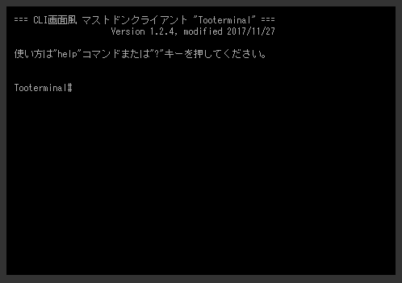
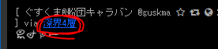
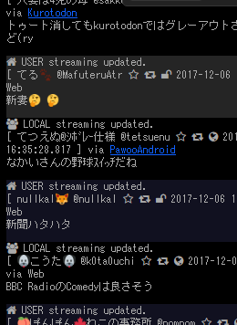
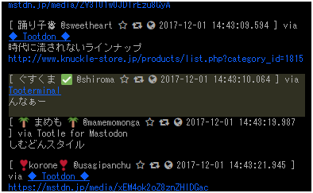
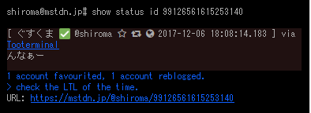

Tooterminalのススメ
この記事はMastodon 2 Advent Calendar 2017の7日目の記事として投稿しています。
今回の記事では、Tooterminalについて良く知らない人向けに、さらっと概要の説明から、使用用途別のコンフィグ投入例などを紹介していきたいと思います。
Tooterminalについて
これはなに？
Mastodon専用Webクライアントです。
NaumanniやHalcyonのような、Webブラウザで動かすことのできるクライアントの一つです。
公式クライアントと何が違うの？
同じWebブラウザなら公式が提供してるクライアントがありますよね。
それでも他のクライアントが出るのは、公式だけではカバーしきれない部分がいくつかあるからなわけで。
- 複数のインスタンスをまとめて表示したい！
- TwitterのUIが好き！
- その他機能を充実させたい！
みたいな、独自の思想を持って作られている感じはあります。
Tooterminalはそもそも業務中にマストドンをしたい環境に溶け込んだクライアントを目指して作られたものです。
そこから色々と機能を盛り込んでいくうちに、特定の用途によっては、公式クライアント以上に使い勝手の良いクライアントに成長したと思います。
Tooterminalで何が出来るの？
以前の記事にも書きましたが、他のクライアントでは出来ないことを中心に改めて書いておきたいと思います。
- LTL、HTL、通知TLなど、複数TLをまとめて表示
- 豊富な正規表現フィルター機能
- 複数フィルターの設定
- 非表示フィルター以外のフィルター(強調フィルター)
- クライアント名、Website名の変更
- トゥートした当時のLTLを表示する機能(max_idの指定)
- ショートカットキーを組み合わせたファボ、ブースト機能
- アカウント情報の詳細表示(登録日、登録してから何日か、等)
具体的にどういう用途で使えばいいのかっていうのを今回の記事のメインにしていますので、もう少し読み進めていただければ幸いです。
Tooterminalってどうやって使うの？
とりあえずTooterminalにアクセスしてみましょう。

チュートリアル的なものは無く、いきなり真っ黒な画面が表示されます。チュートリアル作るのが面倒くさかったわけではありません。本当です。
初期状態ではログインページは開かないし何が出来るか良く分からない画面になってます。
ここからはコンソール操作で、コマンドを入力していくことで少しずつ機能を設定していくイメージです。
このコンソールは、CiscoIOSという、Cisco社が開発しているネットワーク機器に実装されているファームウェアのコンソール画面を模した作りになっています。
なので、操作方法はCisco社製NWスイッチ/ルータを触ったことがある人であれば、抵抗感少なく使い始めることが出来ると思います。
ネットワークエンジニアならCCNAを取得するのに触ったことがある人も多いかと思いますが、そうでない人は難しいところもあると思います。
どういうコマンドを打てばいいのか、という事については、GithubリポジトリのREADME.mdを参照してください。書くのが面倒くさかったわけではありません。本当です。
用途別、設定投入例
基本的な使い方は、GithubリポジトリのREADME.mdに書いてあるので、今回の記事では「公式クライアントでは出来ないこういう使い方が出来るよ！」な視点で初期状態からコンフィグを投入していく流れを紹介してみようと思います。
クライアント名を変更してトゥートするクライアントとして利用する。
たまに見かけますが、クライアント名を自由に設定してる人いますよね？

Tooterminalでもこのように自由なクライアント名を設定することが出来るようになっています。
|
|
この状態でトゥートをしてみると、クライアント名が「深界四層 ナナチのアジト」に変わります。
クライアントURLのリンクを踏めるクライアントを利用しているようであれば、website で設定したURLに遷移することもできます。
LTLとHTLをまとめて見るためのクライアントとして利用する。
マストドンを使っていると必ず出てくる要望ですが。
「HTLとLTLをまとめた一つのTLが欲しい！」
僕もそう思います。なので、実装しました！
|
|

ローカルタイムライン、ホームタイムライン、通知タイムラインがまとめて流れるTLになりました。
なお、ページ読み込み時は terminal monitor が実行されていない状態に戻ってしまいます。
つまり、次回アクセス時にも再度 terminal monitor を打たなければならないということになります。
次回起動時から terminal monitor を自動実行してもらうためには、URLにパラメータを付加してやります。
|
|
- instance=<インスタンス名>
tooterminal# instance <インスタンス名>
を自動発行します。 - terminal=
account@example.com# terminal monitor <terminal type>
を自動発行します。
カンマ区切りで入力することで、複数のterminal monitorを発行します。
「んなぁ」に即時反応できるクライアントとして利用する。
皆さん、TLに流れる「んなぁー」に反応したくなったことありますよね？

しかし仕事中でTLをずっと見ていることはできない！なんてことはありませんか？
こんな時に、TLのキーワードフィルター機能である access-list を使えばさまざまな方法でフィルター通知をしてくれるようになります。
なお、「んなぁーって何？？？？？？？？？」と思われている方もいると思いますので、知りたい方は、本日mstdn.jpのアドベントカレンダーで投稿したもう一つの記事をご確認ください！！
宣伝失礼しました。
|
|
これで画面を見ていなくても「んなぁ」が流れてきたら背景色黄色、デスクトップ通知、合成音声「んなぁ」が流れるフィルターが完成しました。
その他の細々としたTIPS
項目として取り上げるほどではないが、使ってて便利(？)なコマンドの紹介をしておきます。
- ローカルタイムラインを遡る
トゥートをダブルクリックすると、トゥートの詳細が表示されます。
その中にある> check the LTL of the time.をクリックすると、当時のLTLを閲覧することができます。
 - 連投する
Tooterminalは公式クライアントと同様にCtrl+Enterで投稿できるわけですが、Ctrl+Enterを押してからPOSTが完了するまでの間、投稿メッセージはそのままで、特にキー入力制限などを設けていません。
そのため、Ctrl押しっぱなしにしてEnterを連打することで、連投することが可能です。
(誰が使うかは不明ですが、特に直す予定ありません。仕様です)
今後の追加予定機能
正直なところ、abyss.funの運営で若干忙しくなってきた今日この頃です。
追加したい機能はいろいろとあるので、今までから比べると更新は激落ちしますが、以下の機能は実装したいなぁとは思っています。
- リスト機能
- 設定およびACLのインポート/エクスポート機能
- 通知音の差し替え(ポコポコに近づけるorんなぁーする)
僕の業務＆インスタンス運営が忙しくならない以上は開発続いていくと思います。新しいMastodonの機能にもついていこうと思います。
半分以上僕が使いたいだけのクライアントですが、この記事を見て興味が持ってくれる人が出てきてくれたらうれしいです。
今日のアドベントカレンダーは以上です。
次回はYukiya│Naycharlさんのアドベントカレンダーです。ありがとうございました。